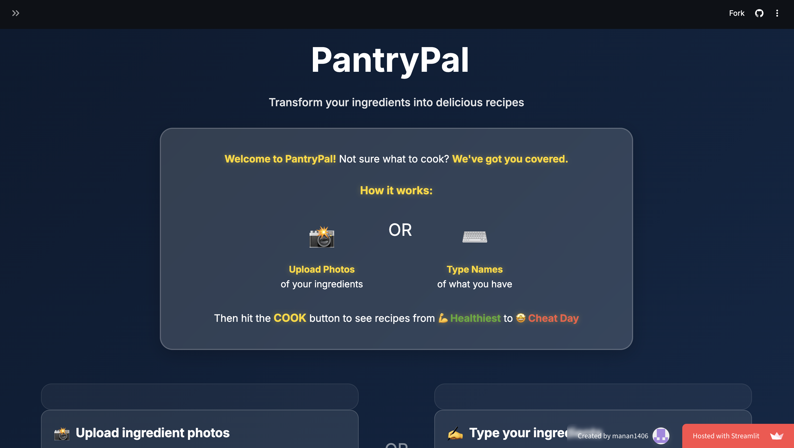
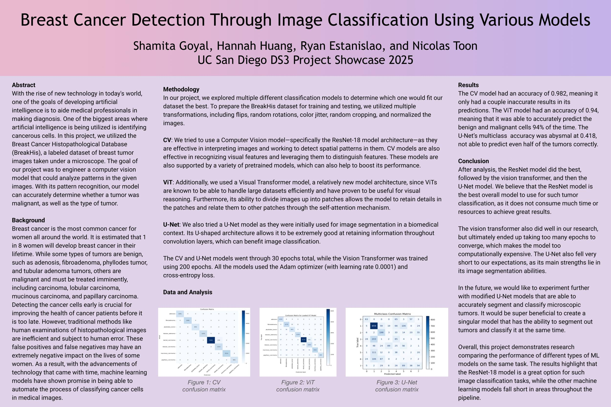
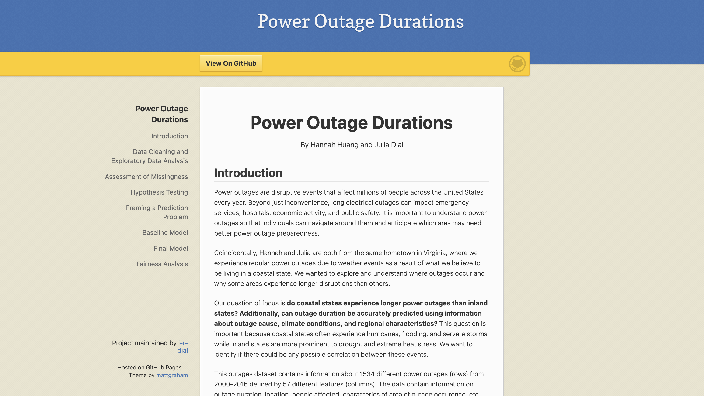
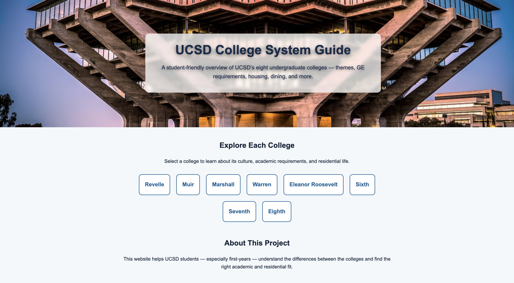
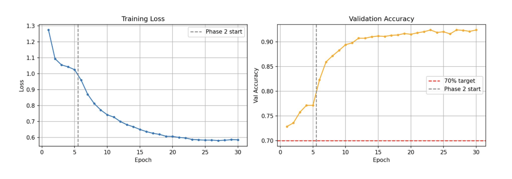

Built a recipe recommendation website that suggests meals based on pantry ingredients.
Users are able to upload an image of items in their pantry and our website works to detect
the items and suggest recipes based on both ingredient match and nutrition levels.

Built a machine learning image recognition model capable of detecting benign vs.
malignant cells at a variety of different magnifications.

An exploratory data analysis project focused on causes, duration, and regional patterns
in U.S. outages.
UCSD Colleges Website

An interactive website designed to help students explore UC San Diego’s eight colleges
and campus life.
Socal Geoguesser Image Classifier

Built an image classification model capable of detecting which Southern California city
(Riverside, Anaheim, San Diego, SLO, Bakersfield, Los Angeles) an image is located in
with 92% accuracy.